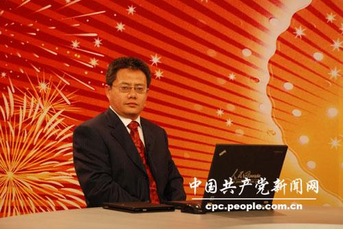
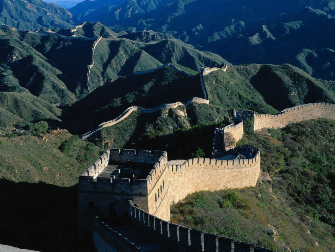

 8日上午，党的十八大隆重召开，胡锦涛同志向大会作题为《坚定不移沿着中国特色社会主义道路前进 为全面建成小康社会而奋斗》的报告。中共中央党校辛鸣教授认为，十八大报告通篇充满新意。这是一篇创新之作，反映了中国共产党伟大的创新精神。这些创新体现在五个方面。
第一，对中国特色社会主义的认识达到了新高度
中国已经发展中国特色社会主义30年了。30年来，我们究竟积累了什么样的宝贵经验，取得了什么样的成果，我们究竟创造了什么样的辉煌，这些问题十八大报告给我们进行了详细深入系统的阐述，十八大报告告诉我们，我们发展中国特色社会主义，我们一定要坚持科学发展，一定要促进社会和谐，而且我们还必须坚持共同富裕，而且十八大报告明确地把高举中国特色社会主义这面旗帜再一次重申，高高举了起来，这是我们当代中国发展进步的旗帜，也是我们中国共产党和中国人民自己的旗帜。 尤其十八大报告对30多年来走中国特色社会主义道路，我们取得的三大成果给予了浓墨重彩的阐述。我们开辟了中国特色社会主义的道路，我们形成了中国特色社会主义理论体系，我们确立了中国特色社会主义制度。这让我们对未来中国特色社会主义发展道路更加清晰，让我们对未来发展中国特色社会主义更加有自信。
第二、对改革开放提出了新要求
30多年来，我们取得的一切成就都是改革开放带来的，未来中国社会发展也要坚定不移地坚持改革开放。但是，如何真正把改革开放坚持到位，让它变成中国社会改革开放的实践，而不仅仅停留于我们的愿望和话语中。这就要求我们对改革开放有一些新的思路和新的理念。比如，我们要更加注重改革开放的顶层设计，就是我们要解决事关改革开放的一些重大问题、根本性问题。
我们经常讲一句话，纲举目张，先把改革开放的纲解决了，改革开放的纲是什么？就是一定要明确改革开放是为了什么，中国的改革开放从来不是为改革开放而改革开放，而是它有一个明确的价值指向，这就是为人民改革开放。是为人民的福祉，为国家的发展，为世界的繁荣进步。
所以从这个角度来说，对改革开放要有一种科学的改革开放观。在这个背景下，还要把改革开放的各项制度更加系统化、协调化、规范化。就是说，过去我们可能有些时候进行改革开放的时候，比较强调单兵突进，或者是摸着石头过河，能走一点算一点。经过30多年的改革开放，我们越来越意识到，已经可以在相当多的方面有规矩可循，可以照章办事，不再需要摸着石头过河了。这需要什么？这就需要我们改革开放制度的协调和配套 
第三、对全面建成小康社会奋斗目标有了新内容
中国共产党在十六大以来提出了全面建设小康社会的奋斗目标，经过这么多年的发展，小康社会建设已经取得了很大的成就，用我们的话说已经总体实现小康了。但是我们一定要记住总体和全面之间还是有一定的差距。我们的小康社会还是低水平的，还是发展很不平衡的，是很不协调的，内容也很不全面。这些年在经济建设方面，成就是很明显的，老百姓最直接的感受就是我们吃饱饭了，经济小康方面已经不成问题了。但是，应该看到，我们在政治小康、文化小康和服务方面还有很多的工作需要去做。
发展有一个先后次序，也和我们的生产力发展水平，和我们的经济国力水平有关系，所以我们不可能齐步走、一刀切。但是随着经济社会的发展，对社会、政治、文化各方面的小康就提出了更高要求。也就是当年小平同志强调的，我们过去总认为发展慢了不行，现在看起来，发展快了问题会更多更复杂。所以，我们今天的小康是在经济领域的小康，可是我们政治、文化方面如果跟进不上的话，就会让老百姓对经济领域的小康提出质疑。所以说，十八大要求我们在未来小康社会的建设过程中间要更加注重经济发展的质量和效益，要更加注重人民群众生活水平，包括政治文化各方面的提升。就是我们的小康是一个真正全面的小康，不仅包括地域的全面，还要包括社会群体的全面，当然也包括内容的全面，这需要一个循序渐进的过程。
第四、对中国特色社会主义总体布局有了新构建
发展中国特色社会主义要体现在各个方面建设上。中国共产党在十六大以前关于中国特色社会主义的建设主要集中于经济建设、政治建设和文化建设。随着中国特色社会主义的发展，到十七大的时候，我们拓展为经济建设、政治建设、文化建设、社会建设，也就是加了一个社会建设，所以称之为中国特色社会主义的总体布局从过去的三位一体变成了四位一体。这次十八大报告上又从四位一体拓展到了五位一体，我们增加了生态文明建设。
为什么说这一点至关重要呢？因为我们看到，中国特色社会主义的发展这些年来成就巨大，但是在成就巨大的背后也看到了未来发展过程中面临越来越多的挑战和问题。我们的经济是发展了，但是环境、资源瓶颈制约越来越大。如何让经济、社会、政治、文化的发展伴随的是生态良好，就像总书记所讲的天更蓝、水更清、山更绿。要靠什么？要靠生态文明建设。要把生态文明的这种观念贯穿到中国特色社会主义的经济建设、政治建设、文化建设、社会建设的全过程和始终，体现在生产方式和生活方式里面。我们要实现绿色发展、低碳发展、循环发展。这就让中国特色社会主义总体布局更加丰满、更加立体，而且更加有利于在未来发展过程中的抗风险性。
第五、对治国理政提出了一系列新部署
在总书记的报告当中关于治国理政方面提出了一些新思考和新方法，作出了一系列新部署。比如在进行经济建设方面，更加强调要以科学发展为主题，以转变经济发展方式为主线，就是我们的经济建设不再仅仅满足于经济总量的提升。我们已经是世界第二了，如何把大变成强和变成好，变成优，需要我们更多地在经济发展的质量和效益上下功夫。
在政治建设方面旗帜鲜明地强调走中国特色的政治发展道路，要把人民当家作主，党的领导和依法治国有机统一起来，要让人民群众更多地感受到民主权利，让人民群众各方面的权益得到社会主义法治的保障。
在文化建设方面，旗帜鲜明地提出要建设社会主义文化强国。十八大报告和十七大报告相比，关于文化建设有了一个很大的变化，十七大报告提出文化的大发展、大繁荣，这一点很好。但是我们也应该看到，大发展大繁荣更多的是一种定性化的表述。这次提出了叫社会主义文化强国，并且有明确的文化强国的目标，我们不仅要满足人民群众日益增长的文化需要，同时我们还要增强中国文化在国际社会的影响力。所以，社会主义文化强国有了很明确的内容和内涵。我们要向世界传播中华文化，尤其是现代中华文化的价值观。我们要告诉世界，这样一种文化价值观对世界文化的发展是一种创新，是一种丰富。 |